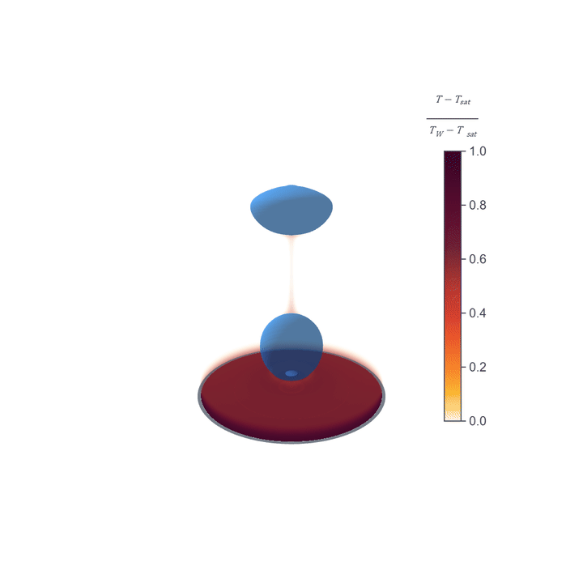
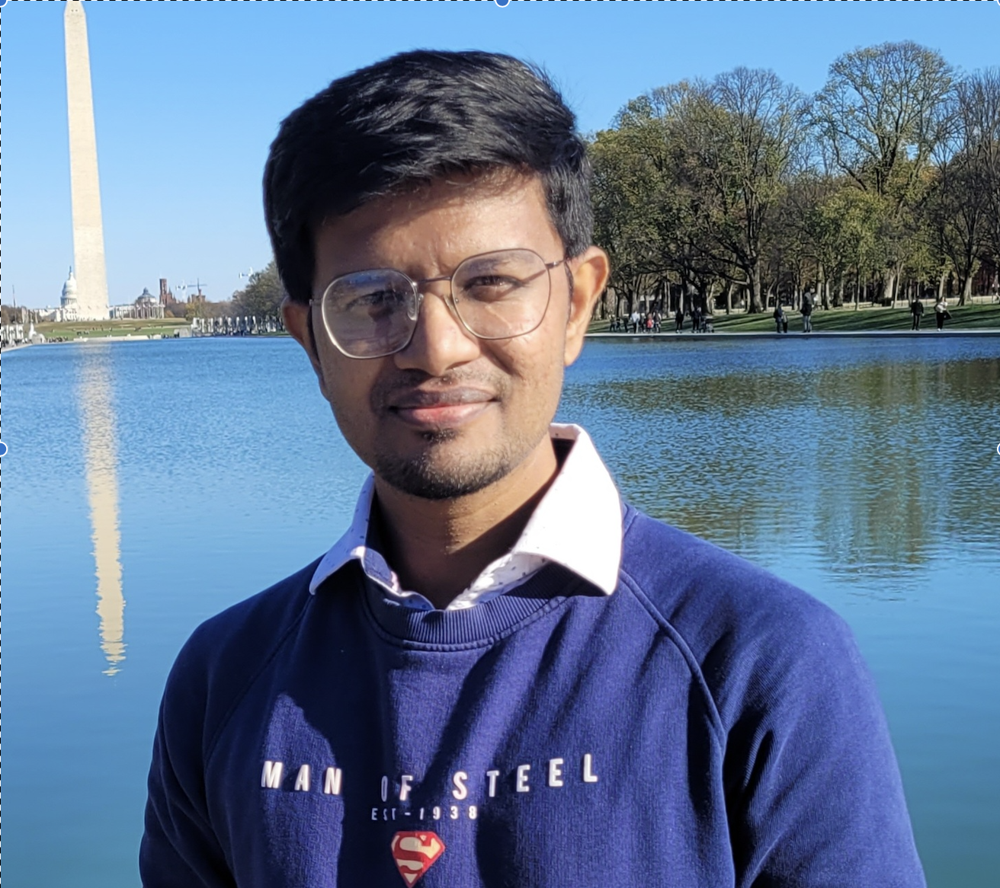
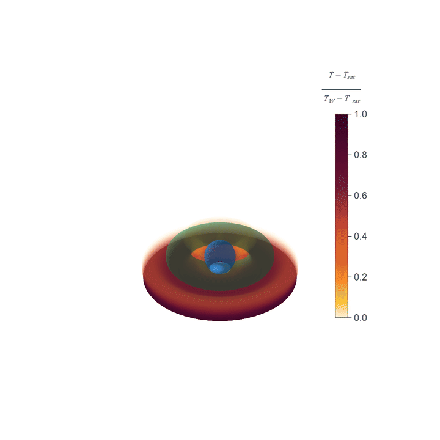

01
Represent the physics
Design sharp-interface, immersed-boundary, level-set, VOF, and CFD-DEM formulations for moving interfaces, phase change, and interacting solids.
I develop high-fidelity numerical methods for multiphase flow, fluid-structure interaction, phase change, particle transport, and scientific machine learning - then turn simulation data into physical mechanisms, scaling laws, and control strategies.


My work connects three layers that are often treated separately: faithful mathematical representation, high-performance simulation, and interpretable scientific discovery.
Design sharp-interface, immersed-boundary, level-set, VOF, and CFD-DEM formulations for moving interfaces, phase change, and interacting solids.
Build and parallelize research solvers in C/C++, CUDA, MPI, OpenACC, and finite-element ecosystems for high-throughput studies.
Use force partitioning, reduced models, scaling laws, and scientific machine learning to identify mechanisms and guide design.
My doctoral work developed a sharp-interface dual-grid level-set and immersed-boundary solver for multiphase flow with phase change and moving solids. The simulations below show how surface motion and immersed structures reshape bubble departure, synchronization, and heat transfer.

The work established lock-on mechanisms in forced boiling, extended the method to 3D multi-site configurations, enabled a dual-grid deep-reinforcement-learning framework, and contributed to an issued patent for sustaining nucleate boiling in zero gravity.
Across my Ph.D. and postdoctoral work, I pursue questions where new computational capability can unlock a new physical explanation.
High-fidelity immersed-boundary simulations of passive-pitch flapping foils reveal how leading-edge vortices, irregular forcing, geometry, and multi-foil wakes generate thrust. More than 450 simulations supported an interpretable vortex-based thrust model.
Sharp-interface methods for boiling with moving solids connect interface dynamics to heat transfer and flow control. Current extensions include 3D VOF-based free-surface flow coupled to moving immersed bodies.
Current work at Purdue develops CFD-DEM models for injectable microparticle suspensions and finite-element models for pressure-driven and advection-diffusion transport in anisotropic biological tissue.
Parallel CPU/GPU solver development supports every research direction: MPI and CUDA multiphase solvers, GPU force-partitioning analysis, scalable pressure projection, and multi-terabyte scientific post-processing.
Selected publications spanning unsteady propulsion, multiphase computation, heat transfer, and scientific machine learning.
H. S. Raut, J.-H. Seo & R. Mittal · Journal of Fluid Mechanics, 1041, A12
H. S. Raut, J.-H. Seo & R. Mittal · Physical Review Fluids, 10(8), 084705
H. S. Raut, J.-H. Seo & R. Mittal · Ocean Engineering, 317, 119930
H. S. Raut, A. Bhattacharya & A. Sharma · International Journal of Heat and Mass Transfer, 227, 125561
H. S. Raut, A. Bhattacharya & A. Sharma · International Journal of Heat and Mass Transfer, 193, 122995
H. S. Raut, A. Bhattacharya & A. Sharma · International Journal of Thermal Sciences, 162, 106785
Particle-laden injectable formulations, immersed-boundary CFD-DEM, and anisotropic biological transport.
Wave-assisted propulsion, unsteady FSI, 3D multiphase flow, and force-partitioning analysis.
Multifluid-structure interaction, nucleate boiling, GPU computing, and DRL-based flow control.
Mechanical and Aerospace Engineering; direct simulation and stability of oscillating-cylinder wakes.